Whereabouts Compass
Whereabouts Compass
iPhone 6.9″


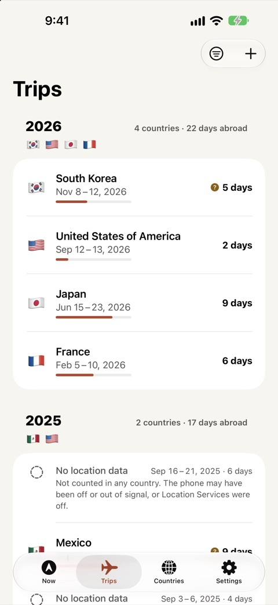

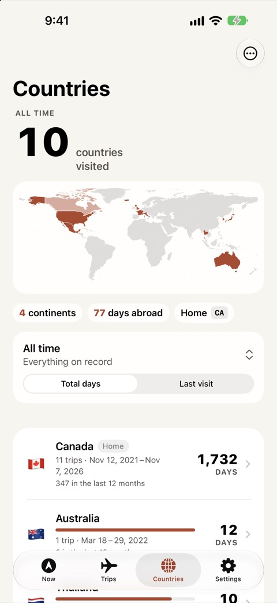

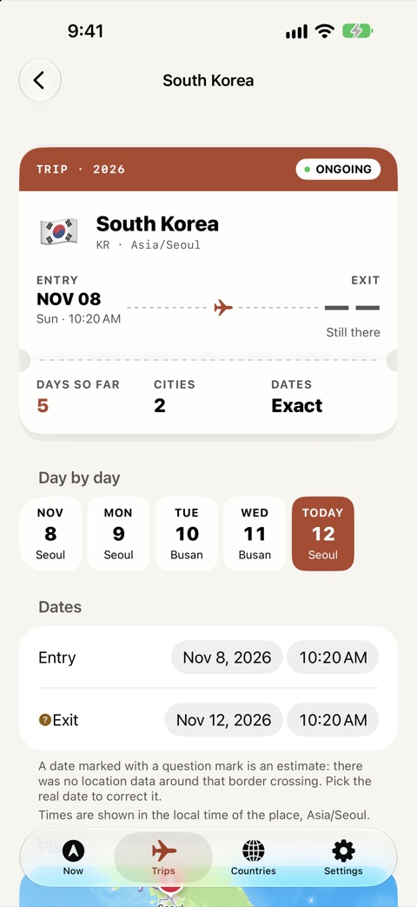

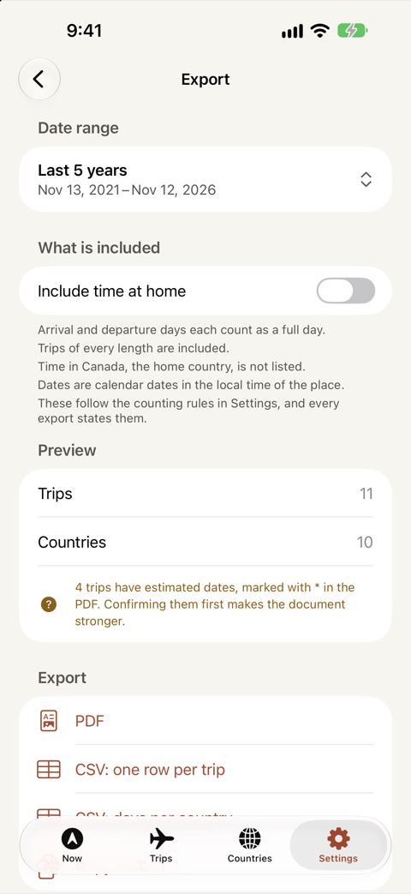


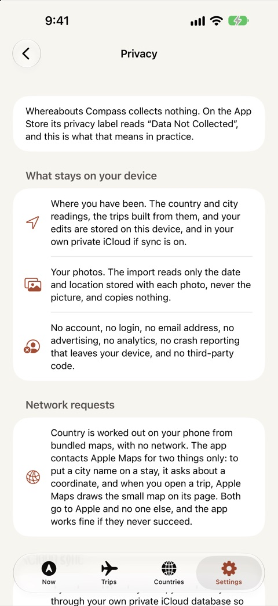


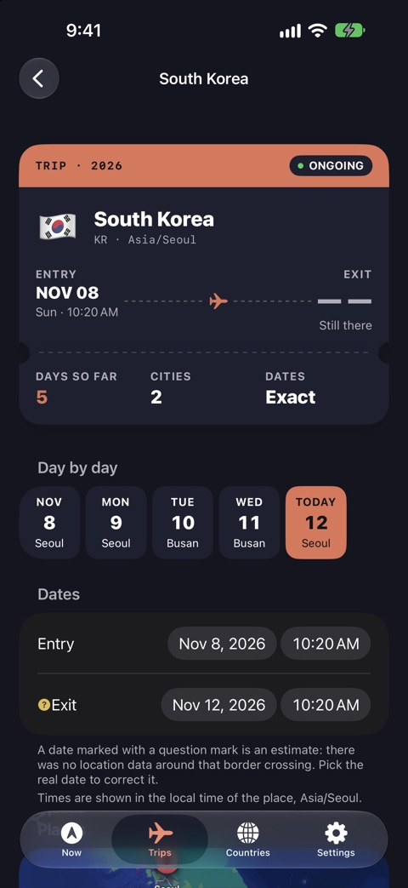

iPad 13″

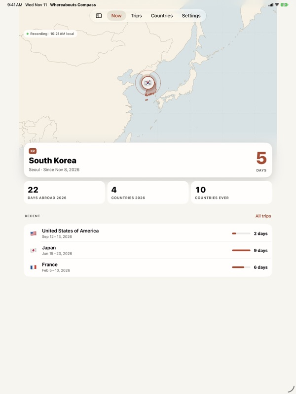


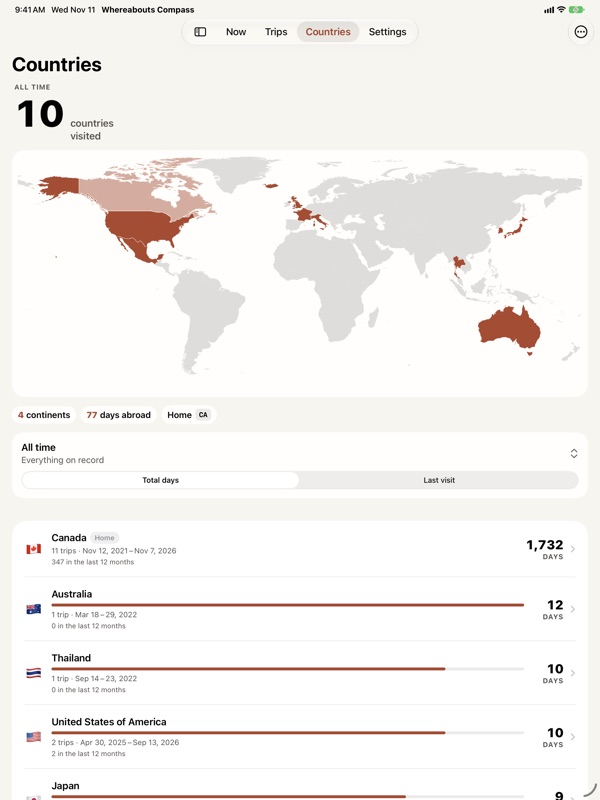

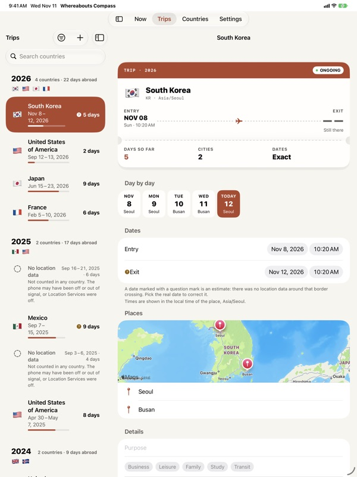

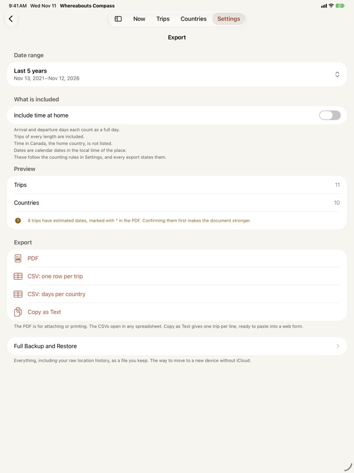

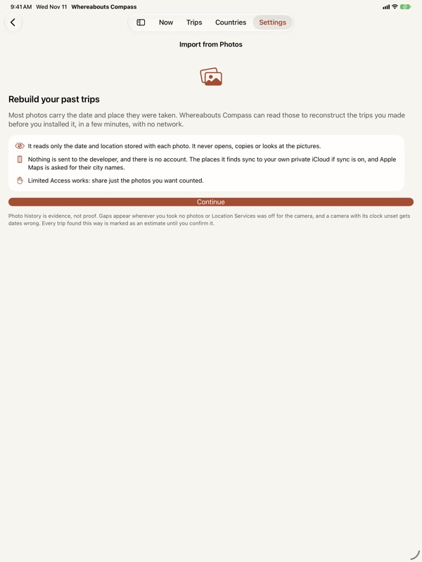


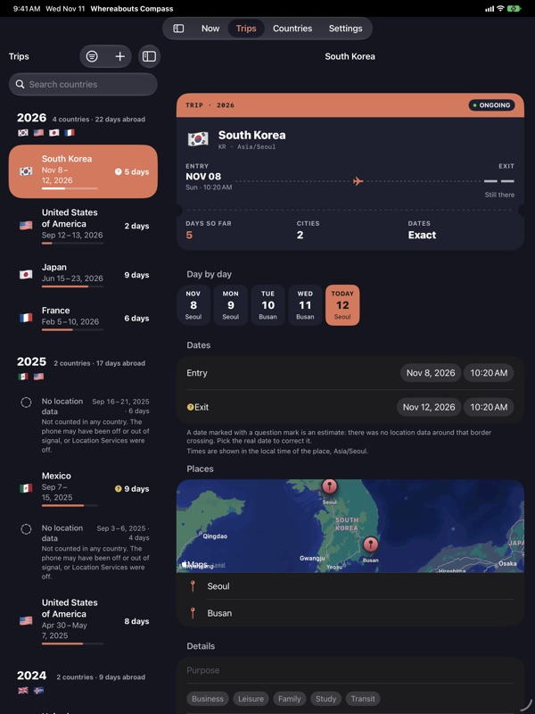

Ryion
Each one does a single job well. No accounts, no ads, no analytics, and your data stays with you.
Tap a screenshot for the full-size file. Each app has its own set for iPhone (6.9″) and iPad (13″).












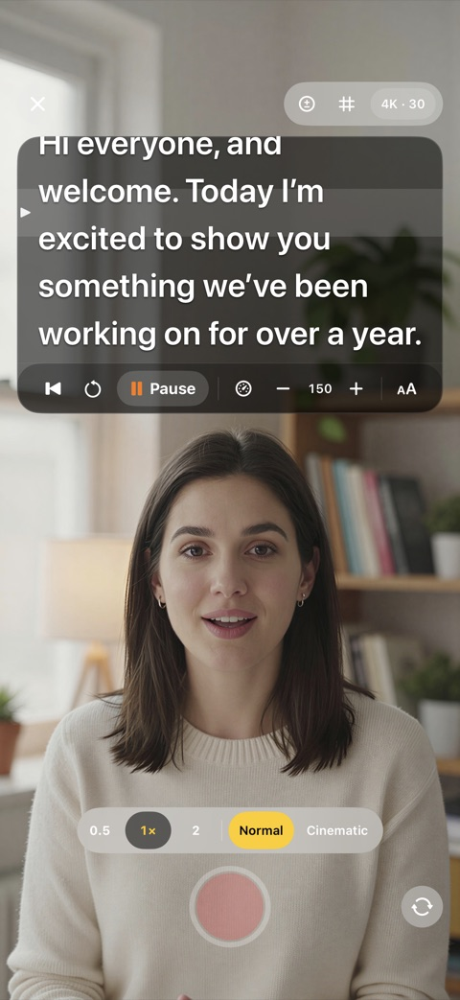


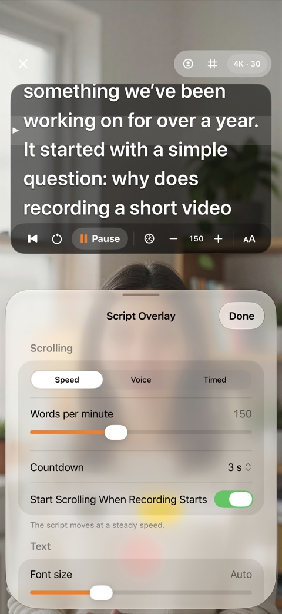

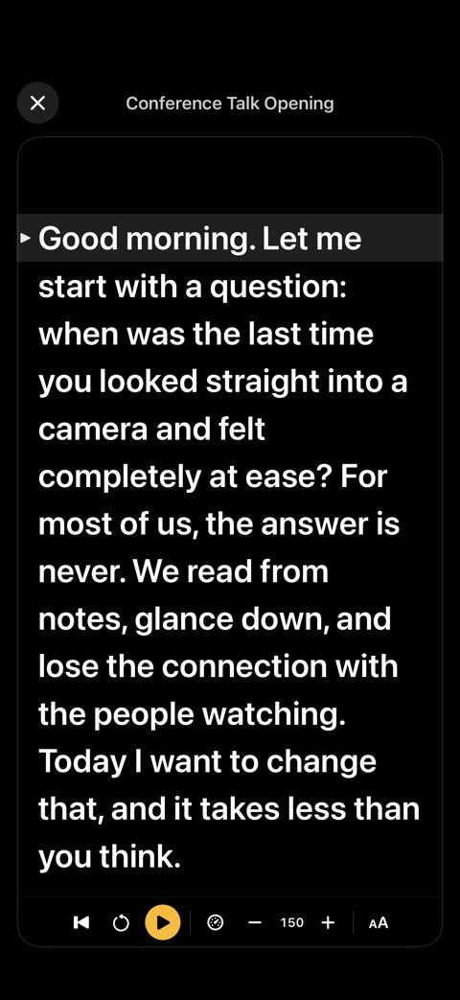
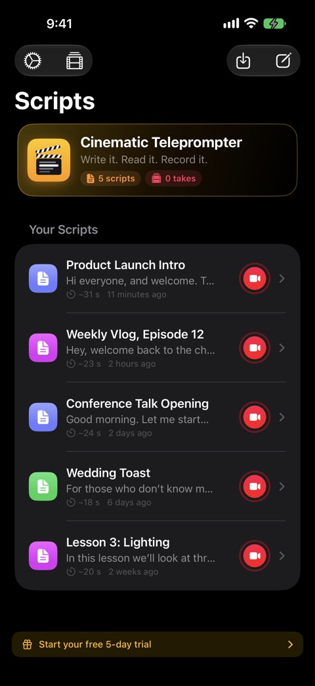

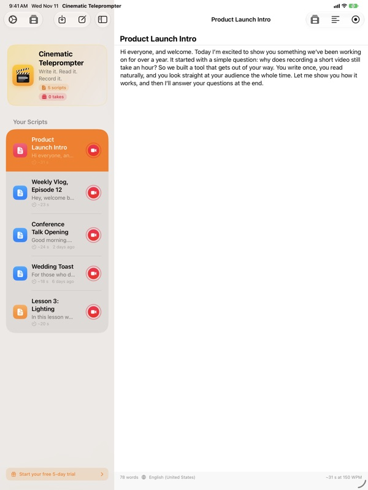
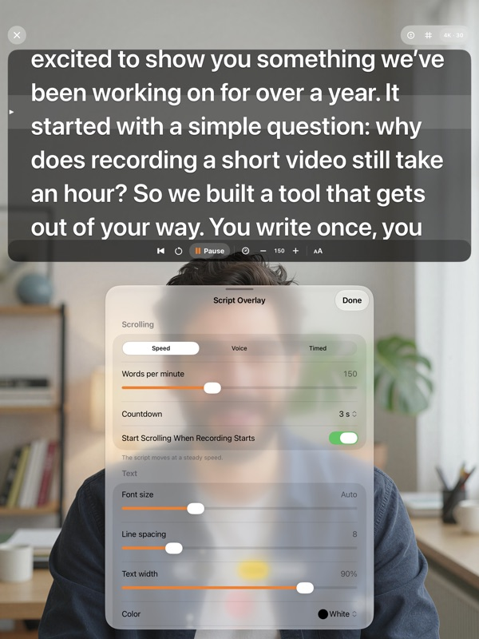
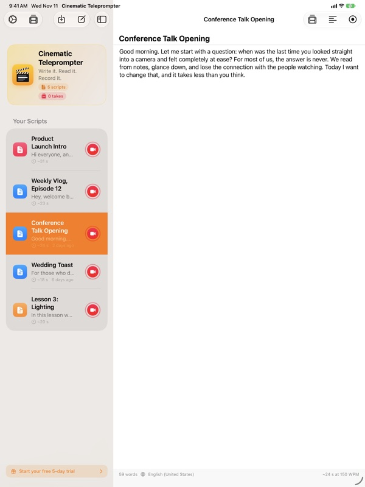
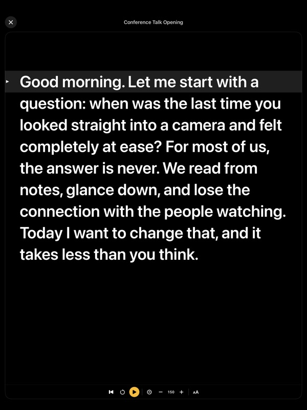
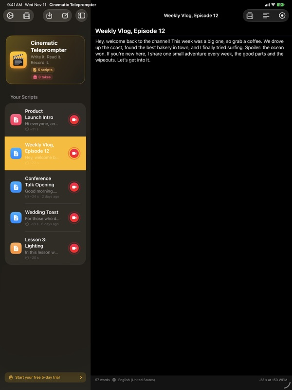